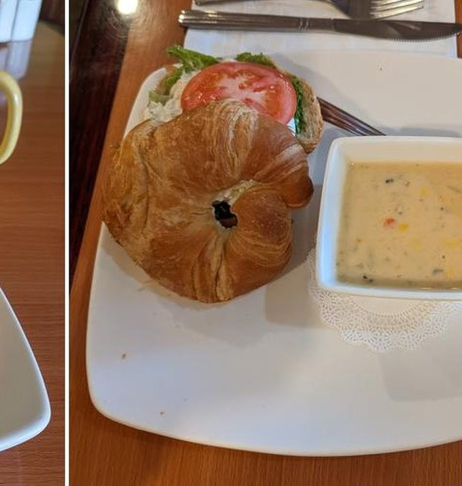

The Short Version
Twelve years of feeding Green Valley.
Nancy Byrd and her late husband opened Mountain View Cafe and Bakery in 2014, tucked into a small space off Duval Road with a view of the Santa Rita Mountains out the window. The idea was plain. Make the sandwiches from scratch. Bake the bread and the cakes and the tarts in-house. Treat every regular like a regular.
Twelve years later we are still here, still scratch-cooking, and still family-owned. The pandemic did not close us. Time has not changed us. We just keep putting lunch on the counter.